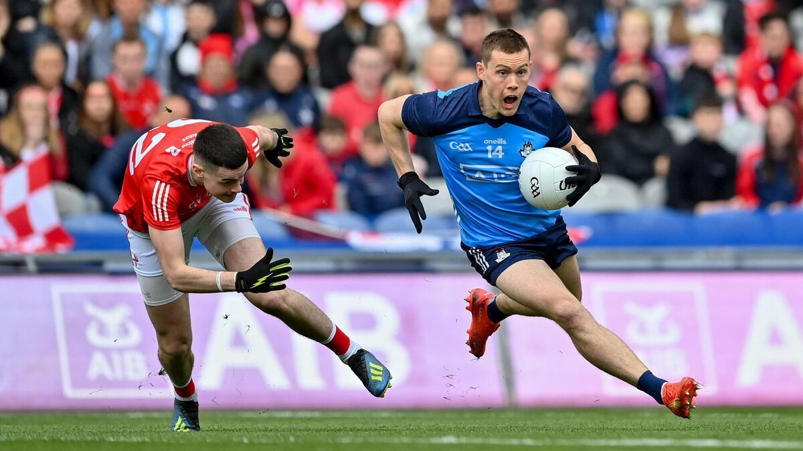
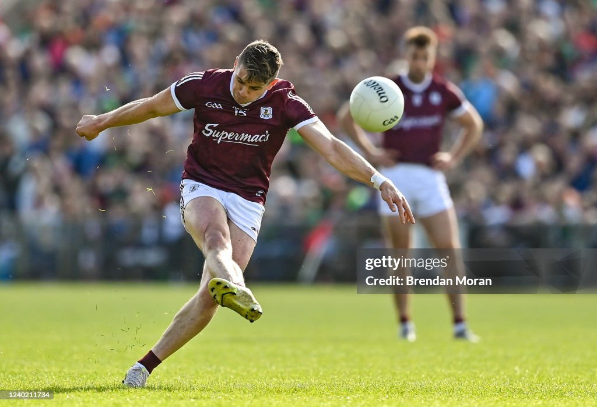
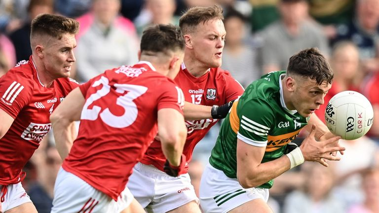

Anticipation mounts for one of the most fiercely contested Gaelic football competitions this summer: the Ulster Championship.
With a storied history and a reputation for producing thrilling matches,
this year's championship promises to deliver yet another chapter of intense rivalry, skilful play, and unforgettable moments.
Join us as I delve into the excitement and drama that awaits in the 2024 Ulster Championship.
Contenders And Dark Horses
The Ulster Championship boasts a lineup of powerhouse teams and emerging contenders,
each vying for the prestigious Anglo-Celt Cup. Traditional giants such as Tyrone, Donegal,
and Derry have recently dominated the championship landscape, with their blend of talent, experience, and tactical prowess.
However, up-and-coming squads like Armagh, Down, Monaghan, Cavan and Fermanagh are poised to challenge the established order and shake up the competition.
Can any county this summer stop Derry doing the three in a row?
Key Matchups to Watch
The draw for the Ulster Championship sets the stage for a series of captivating showdowns, pitting bitter rivals and formidable adversaries against each other. Among the most eagerly anticipated matchups is the clash between reigning champions Derry and perennial contenders Donegal. This storied rivalry is steeped in history and has produced some of the championship's most memorable moments.
Meanwhile, the battle between Cavan and Monaghan promises to be another highlight, with both teams boasting talented squads hungry for success. Expect a fiercely contested encounter as these two neighbouring counties vie for supremacy on the field. The winner takes on Tyrone in the quarter final which will be another electrifying fixture.
Armagh on the other side of the draw dream to go one step further this season and win the Anglo-Celt Cup with a tough opening fixture against Fermanagh.
Tailteann Cup finalists Down meets Antrim in which will be another fiercely contested fixture of the championship.
Players to Watch
The Ulster Championship is renowned for showcasing the talents of Gaelic football's brightest stars,
and this year is no exception. Keep an eye on players like Oisin Gallen (Donegal), Ruairi Canavan (Tyrone),
and Shane McGuigan (Derry), whose skill, leadership, and match-winning abilities could prove decisive in their team's quest for glory.
Other top talents such as Conor McCarthy (Monaghan), Rian O'Neill (Armagh), and Conor Glass (Derry) will also be worth watching, as they look to make a name for themselves on the championship stage.
As the excitement builds and the stage is set for another thrilling edition of the Ulster Championship, fans across the province and beyond eagerly await the drama and excitement that await. With fierce rivalries, top-class talent, and the promise of unforgettable moments, the 2024 Ulster Championship is sure to captivate audiences and reaffirm its status as one of the premier competitions in Gaelic football. So, buckle up, football fans, and get ready for a rollercoaster ride of passion, intensity, and sporting excellence in the Ulster Championship.
Up next, we have the Leinster Championship. With a rich history and a reputation for producing riveting matches,
it’s fair to say in recent history has been a predictable outcome.
Join us as we take a closer look at the teams who may stop Dublin doing the 14 in a row and the players who look to light up the stage in the 2024 Leinster Championship.
Contenders And Dark Horses
The Leinster Championship boasts a lineup of formidable contenders, with perennial powerhouses such as Dublin, Meath, Louth and Kildare leading the charge.
Reigning champions Dublin, with their unparalleled dominance in recent years, are once again the team to beat, as they seek to extend their stranglehold on the provincial title.
However, challengers like Meath, eager to reclaim past glories along with Louth and Kildare, buoyed by a talented young squad, will be determined to upset the established order and stake their claim for championship glory.
Key Matchups to Watch
The draw for the Leinster Championship sets the stage for a series of tantalizing clashes, pitting traditional rivals and rising contenders against each other.
Among the most anticipated matchups is the potential showdown between arch-rivals Dublin and Meath (Depending on Meath overcoming Longford in the preliminary round),
a fixture steeped in history and passion. Expect sparks to fly as these two titans of Leinster football lock horns in a battle for provincial supremacy.
Dark horses such as Westmeath and Offaly will also be looking to make their mark, eager to spring a surprise and upset the established order.
Players to Watch
The Leinster Championship is renowned for showcasing the talents of Gaelic football's brightest stars, and this year is no exception.
Keep an eye on players like Con O'Callaghan (Dublin), Sam Mulroy (Louth), and Matthew Costello (Meath), whose skill, leadership,
and match-winning abilities could prove decisive in their team's quest for championship glory.
As anticipation reaches fever pitch and excitement fills the air, the stage is set for another thrilling edition of the Leinster Championship.
With fierce rivalries, top-class talent, and the promise of unforgettable moments, the 2024 championship is sure to captivate.
So fasten your seatbelts, football fans, and get ready for a summer of passion, intensity, and sporting excellence in the Leinster Championship.

Con O'Callaghan of Dublin in action against Conall McCaul of Louth during the Leinster SFC final at Croke Park.
As the winds sweep across the rugged landscapes of the West of Ireland,
anticipation builds for one of Gaelic football's most fiercely contested competitions: the Connacht Championship.
With a backdrop of stunning scenery and a tradition steeped in pride and passion,
this year's championship promises to deliver a spectacle befitting of its storied history.
Join us as we explore the teams, key matchups, and players set to ignite the stage in the 2024 Connacht Championship.
Contenders And Dark Horses
The Connacht Championship boasts a lineup of formidable contenders, with perennial powerhouses such as Mayo, Galway, and Roscommon leading the charge.
Reigning champions Galway, buoyed by their recent successes and driven by a hunger for further glory, enter the championship as the team to beat.
However, challengers like Mayo, with their rich footballing tradition, and Roscommon, renowned for their resilience and determination,
are poised to provide stiff competition and keep the title race wide open.
Key Matchups to Watch
The draw for the Connacht Championship sets the stage for a series of captivating clashes, pitting traditional rivals and emerging contenders against each other.
Among the most eagerly anticipated matchups is the potential showdown between arch-rivals Mayo (Provided they overcome New York) and Roscommon,
a fixture steeped in history and passion.
Expect sparks to fly as these two titans of Connacht football renew their age-old rivalry in a battle for provincial supremacy.
Meanwhile, clashes between Galway and London, as well as Leitrim and Sligo, are also set to ignite the championship,
with both matchups promising intense competition and high-stakes drama.
Dark horses such as Leitrim and Sligo will also be looking to make their mark, eager to upset the established order and stake their claim for
championship glory.
Players to Watch
The Connacht Championship is renowned for showcasing the talents of Gaelic football's brightest stars, and this year is no exception.
Keep an eye on players like Paddy Durcan (Mayo), Shane Walsh (Galway), and Enda Smith (Roscommon), whose skill, leadership,
and match-winning abilities could prove decisive in their team's quest for championship glory. Emerging talents such as Tommy Conroy (Mayo)
and Ben O’Carroll (Roscommon) will also be worth watching, as they look to make a name for themselves on the championship stage.
As excitement reaches fever pitch and anticipation fills the air, the stage is set for another enthralling edition of the Connacht Championship.
With fierce rivalries, top-class talent, and the promise of unforgettable moments, the 2024 championship is sure to captivate audiences and
reaffirm its status as one of the premier competitions in Gaelic football.
So, brace yourselves, football fans, and get ready for a summer of passion, intensity, and sporting excellence in the Connacht Championship.

Shane Walsh of Galway takes a free kick during the Connacht GAA Football Senior Championship.
As the sun casts its warm glow over the picturesque landscapes of Munster,
anticipation mounts for one of Gaelic football's most revered competitions: the Munster Championship.
With a backdrop of rich history and a tradition steeped in passion and rivalry, this year's championship promises to captivate fans and
showcase the very best of Munster football. Join us as I dive into the teams, key matchups,
and players poised to light up the stage in the 2024 Munster Championship.
Contenders And Dark Horses
The Munster Championship boasts a lineup of formidable contenders, with perennial powerhouses such as Kerry and Cork leading the charge.
Reigning champions Kerry, with their unparalleled success and depth of talent, enter the championship as the team to beat.
However, challengers like Cork, fuelled by a desire to reclaim past glory, and Clare,
buoyed by young developing squad are determined to challenge Kerry's dominance and stake their claim for championship honours.
Key Matchups to Watch
The draw for the Munster Championship sets the stage for a series of captivating clashes, pitting traditional rivals and
emerging contenders against each other. Among the most eagerly anticipated matchups is the potential showdown between arch-rivals Kerry and Cork (Provided Cork beat Limerick in the Quarter-Final),
a fixture steeped in history and passion. Expect fireworks as these two titans of Munster football renew their age-old rivalry in a battle for provincial supremacy.
Meanwhile, clashes between Tipperary and Waterford, with the winners playing Clare in the semifinal serve up an exciting championship draw.
Dark horses such as Limerick and Tipperary will also be looking to make their mark, eager to upset the established order and make a deep run in the championship.
Players to Watch
The Munster Championship is renowned for showcasing the talents of Gaelic football's brightest stars, and this year is no exception.
Keep an eye on players like David Clifford (Kerry), Sean Powter (Cork), and Sean O'Shea (Kerry) whose skill, leadership,
and match-winning abilities could prove decisive in their team's quest for championship glory.
Emerging talents such as Rory Maguire (Cork), will also be worth watching.
As excitement reaches fever pitch and anticipation fills the air, the stage is set for another unforgettable edition of the Munster Championship.
With fierce rivalries, top-class talent, and the promise of unforgettable moments,
the 2024 championship is sure to captivate audiences and reaffirm its status as one of the premier competitions in Gaelic football.
So, brace yourselves, football fans, and get ready for a summer of passion, intensity, and sporting excellence in the Munster Championship.

David Clifford closely watched by Cork players.